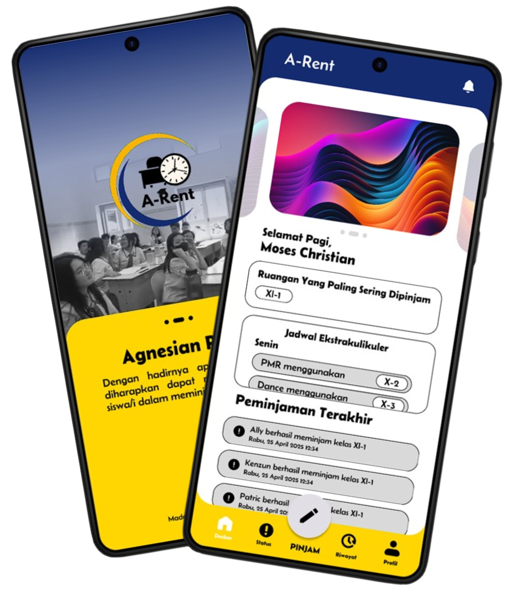
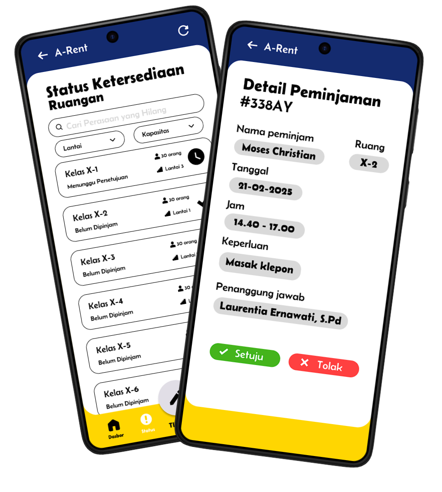

Saitama
A-Rent (Agnesian Rent) adalah aplikasi berbasis digital yang dirancang untuk mengelola peminjaman ruang kelas di SMA Katolik Santa Agnes secara lebih efisien, transparan, dan modern. Dengan fitur utama seperti informasi ketersediaan kelas real-time, formulir peminjaman digital, serta notifikasi status peminjaman, aplikasi ini menggantikan sistem manual berbasis surat yang kurang praktis.
simplifies class booking in just a few taps.
Genos
Tujuan dari aplikasi A-Rent adalah untuk meningkatkan efisiensi dan transparansi dalam sistem peminjaman ruang kelas di SMA Katolik Santa Agnes dengan mengotomatisasi proses yang sebelumnya manual. Aplikasi ini bertujuan untuk memberikan akses real-time terhadap ketersediaan ruang kelas, mempercepat proses peminjaman, mengurangi risiko kehilangan dokumen, serta mempermudah dokumentasi dan pelacakan penggunaan ruang.
book, track, and manage classrooms effortlessly